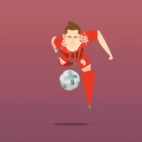

SOME OF MY HOBBIES

Soccer
Soccer helps me to keep my mind and body in shape. Also, I am a die-hard of Manchester United, United Kingdom for almost more than a decade. So my nights are occupied by
mid-night champions league and premier league matches. Apart from watching soccer, I love to play Fifa on PlayStation.

Cycling
After moving from India to USA, Cycling slowly creeped into my hobbies list. Yes, I go for cycling in the evening to achieve my daily fitness goals. Also, I am looking for groups that do cycling activities. Send me a message and I would be happy to join!!

Cooking
During my free times, I love to cook South Indian foods and enjoy the delicious meals. I can make very good Chicken Briyani which is a dish made up of rice, lots of spices and marinated chicken. Also, I have started trying out other cuisines and getting my hands dirty.

Reading
I put myself in Library or in a silent place and read as many books as I can. I mostly prefer self-development books which will help me to become a better version of myself. "He that loves reading has everything within his reach."